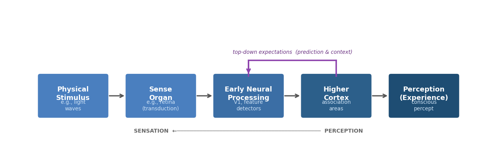
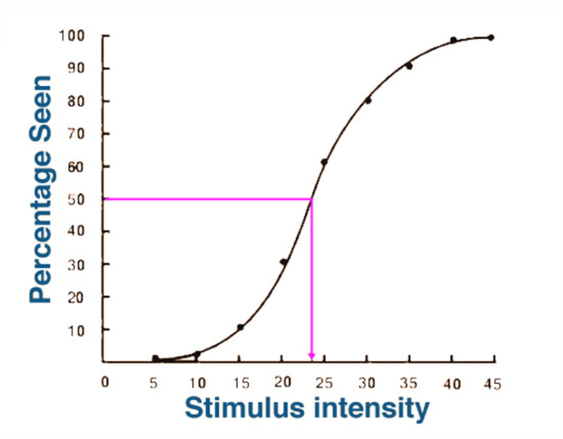
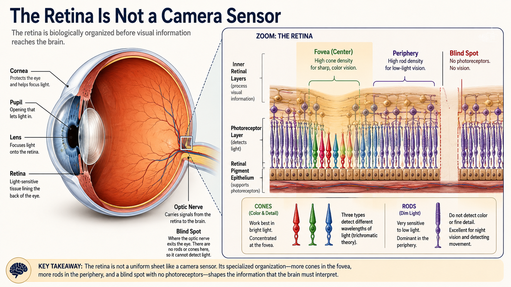
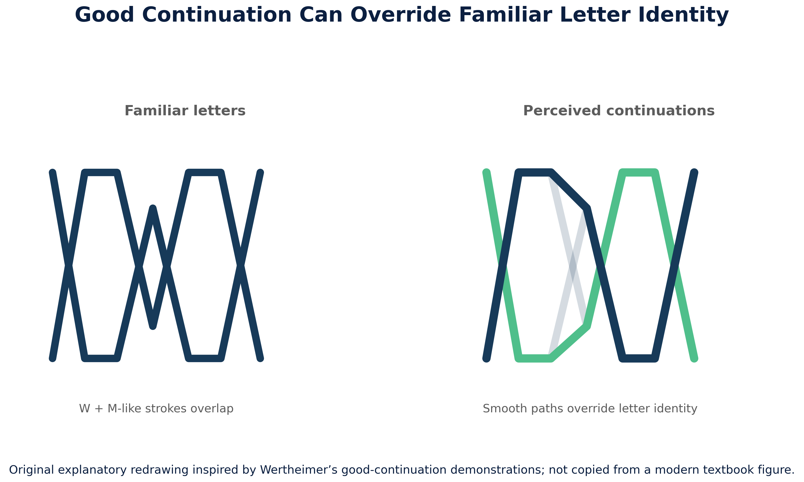
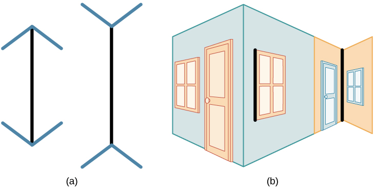
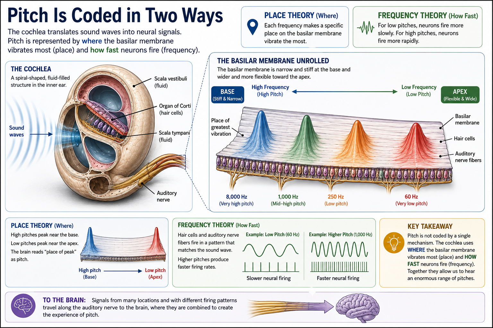
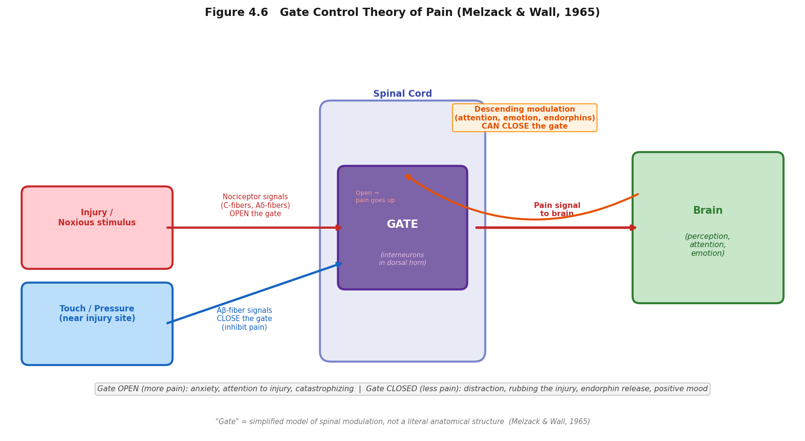

Sensation and Perception
"Your eyes work like a camera: they record the world exactly as it is, and your brain just plays the recording back."
This is an easy thing to believe, because vision does not feel like work. You open your eyes and the world is simply there — sharp, colored, three-dimensional, already organized into objects and distances. There is no felt sense of construction, no moment where you can catch your brain in the act of building the scene. Compare that to, say, solving a math problem, where you can feel yourself working through steps. Seeing feels immediate. So it is natural to assume that what you experience is a more or less direct transcript of what is actually out there.
It is not. Two simple demonstrations make this concrete before we ever get to the underlying mechanism. First: your retina has a blind spot — a region with no photoreceptors at all, where the optic nerve exits the eye — yet you do not see a hole in your visual field, because your brain fills it in with a plausible guess based on the surrounding pattern. A camera with a dead patch of sensor would simply show a dead patch; your visual system edits the dead patch out and shows you something that was never actually sensed. Second: read the phrase in this sentence quickly, out loud, instead of slowly word by word, and see see if you notice anything unusual about it. Most readers do not catch the repeated word on the first pass, because the brain expects the sentence to make sense and skips over evidence that it does not. A beginning reader sounding out each word individually is far more likely to catch the error. Both demonstrations point at the same conclusion: your visual system is not a passive recorder. It is constantly filling gaps, editing out anomalies, and making confident guesses about what is probably there — using a mix of the raw input and what you already expect to see.
The evidence for this goes well beyond a couple of clever tricks; it is one of the organizing distinctions of this entire chapter, between processing that is purely bottom-up (built from the raw data) and processing that is top-down (shaped by expectation, memory, and context). A camera only does the bottom-up part. Your visual system does both, constantly, and it is often impossible to tell from the inside which parts of your experience came from the world and which parts your brain supplied on its own. Later in this chapter, we will use a genuinely modern version of the camera-versus-brain comparison — a car that is marketed as having "vision" — to make this distinction concrete, because the engineers who built that system ran headfirst into the exact same problem your visual system solves every waking second. The upshot, which this chapter will return to again and again: perception is not a recording of the world — it is an active prediction about it, continuously tested against incoming data and revised when wrong.
Where This Fits
Chapter 3 explained how a neuron generates an electrochemical signal; this chapter is about how that same basic mechanism gets aimed at the outside world. Every sense organ in this chapter — retina, cochlea, skin — is, at bottom, doing the same job: converting one kind of physical energy into the neural signaling Chapter 3 already covered, then handing the result to a brain that has to make sense of it. That second step turns out to be far more active and inference-driven than common sense suggests, which is why the chapters ahead lean on this one constantly: selective attention and the famous "cocktail party effect" (Chapter 5) are really questions about which sensations get promoted to conscious perception, and the constructive, expectation-driven nature of perception introduced here previews the equally constructive nature of memory (Chapter 7) — what never gets perceived in the first place can never be remembered later.
Learning Objectives
- Differentiate sensation from perception, and explain transduction as the physical process common to every sense organ.
- Define absolute threshold and difference threshold (Weber's Law), and apply signal detection theory to a real-world detection problem involving uncertainty.
- Describe the basic anatomy of the visual and auditory systems, and trace how each converts physical energy (light, sound waves) into a neural signal.
- Explain why trichromatic theory and opponent-process theory of color vision are complementary rather than competing, and apply the same logic to place theory and frequency theory of pitch perception.
- Distinguish top-down from bottom-up processing, and explain how predictive coding describes the brain as generating expectations that are continuously tested against sensory input (APA IPI Theme 5: our perceptions and biases can be inaccurate).
- Use Gestalt principles and perceptual constancy to explain how perception actively organizes incomplete sensory input into a stable experience.
- Explain the gate control theory of pain as a case where a "purely physical" sensation turns out to be shaped by signals descending from the brain.
- Apply the evolutionary perspective to explain why a specific sensory system is tuned the way it is, rather than some other plausible way it could have been built.
Section 1: The Basics — Detecting a Changing World
Before anything else, this chapter needs one foundational distinction in place, because almost everything else builds on it. Sensation is the physical process by which a sense organ responds to a stimulus and converts it into a neural signal — light hitting your retina, a sound wave reaching your eardrum, a chemical binding to a receptor on your tongue. Perception is the psychological process of organizing and interpreting that signal so that it becomes a meaningful experience — recognizing the light pattern as your friend's face, the sound as your name being called, the taste as the coffee you ordered. Sensation begins with receptor transduction at the sense organ; perception emerges as the nervous system organizes and interprets those signals — a process that starts surprisingly early (the retina and cochlea both do real preprocessing before a signal ever reaches the brain) and continues through many stages of the brain, not just one final "perception step."
Diagnostic question: a person with a particular kind of brain damage can have completely normal eyes, an intact retina, and a fully functional optic nerve — every sensory component working — yet be unable to recognize faces, a condition called prosopagnosia. Is this a deficit of sensation or of perception? (Perception: the sensory machinery delivering the raw signal is intact; the breakdown is in the brain's later interpretation of that signal.)

A useful starting question for this whole chapter, and one that fits the evolutionary lens this course keeps returning to, is: why does any organism sense anything at all? The answer is not "to have rich experiences" — it is that detecting relevant changes in the environment, and doing almost nothing else, is what kept your ancestors' ancestors alive long enough to have ancestors of their own. That framing explains a cluster of basic principles that hold across every sense organ we will cover in this chapter, human or otherwise.
The first principle is that detection has a floor. Each sense organ requires some minimum amount of stimulation before it registers anything at all — your eyes will not respond to an arbitrarily faint light, and your ears will not respond to an arbitrarily quiet sound. Researchers call this minimum the absolute threshold, formally defined as the smallest amount of stimulation needed for a person to detect a stimulus 50% of the time (not 100%, because detection at very low intensities is probabilistic, not all-or-nothing, and varies from moment to moment depending on fatigue, attention, and what you were just exposed to). Human sensory capability at this floor is genuinely remarkable: under ideal dark conditions, the human eye can detect the equivalent of a candle flame burning some 30 miles away, and under ideal quiet conditions, the human ear can detect a watch ticking from 20 feet away (Galanter, 1962).
Detecting whether something is there is one problem. Detecting whether something changed is a related but separate problem, and it follows a different rule. Pick up a 1-pound weight, then a 2-pound weight — the difference is obvious. Now pick up a 10-pound weight, then an 11-pound weight — also a 1-pound difference, but it is much harder to notice. This is Weber's Law: the smallest detectable difference between two stimuli — the difference threshold, or just noticeable difference (JND) — is not a fixed amount, but a roughly constant proportion of the original stimulus's size (Weber, 1834; formalized by Fechner, 1860). A bigger stimulus needs a bigger absolute change before the difference registers, even though the proportional change required stays about the same. You can feel this directly: try the Weber's Law demo in the Ch. 4 lab.

Before reading on — in your own words, what is the difference between an absolute threshold and a difference threshold, and how does Weber's Law connect to the second one?
Both of these thresholds — and the everyday experience of uncertain detection in general — are studied using a framework called signal detection theory, which formalizes something every one of us has actually lived through: deciding whether a faint stimulus was really there, under conditions where you cannot be certain. Imagine you are waiting for an important text message and you feel your phone vibrate in your pocket — except it turns out there was no message. Signal detection theory gives this experience precise vocabulary. A hit is correctly detecting a stimulus that was actually present; a miss is failing to detect one that was present; a false alarm is reporting a stimulus that was not actually there (the phantom vibration); and a correct rejection is correctly reporting that nothing was there. Critically, signal detection theory recognizes that your willingness to report "yes, I detected it" — your decision criterion — is separate from your actual sensory sensitivity, and the criterion shifts depending on the cost of getting it wrong. A radiologist scanning for a tumor and a teenager waiting for a crush to text back are running the same basic detection process, with very different criteria for how much ambiguous evidence is enough to say "yes."
Think of a recent time you thought you sensed something — a phantom phone vibration, hearing your name called in a noisy room, seeing movement out of the corner of your eye — that turned out not to be there. Using signal detection theory's vocabulary, was that a false alarm, and what do you think your decision criterion was doing in that moment?
Adjust a detection criterion and watch how your hit rate and false-alarm rate trade off against each other: Ch. 4 Interactive Labs → Signal Detection.
| Stimulus was present | Stimulus was absent | |
|---|---|---|
| Said "yes, detected" | Hit | False alarm |
| Said "no, not detected" | Miss | Correct rejection |

Finally, sense organs respond strongly to a stimulus when it first appears, but progressively less as it persists unchanged — in effect, becoming tuned to change rather than to whatever is currently constant. When a stimulus stays the same for long enough, your receptors gradually stop responding to it — a phenomenon called sensory adaptation. This is why you stop feeling the weight of your own clothing within a few minutes of putting it on, why a persistent background hum disappears from awareness, and why the car radio that sounded perfectly reasonable last night seems blaringly loud the next morning — your auditory system adapted to the volume over the course of the drive, then reset overnight (Privitera, 2026). From an evolutionary standpoint, this makes excellent sense: a constant stimulus is, almost by definition, not new information, and devoting limited processing resources to monitoring it continuously would be a poor use of a metabolically expensive nervous system. What is worth your attention is what changes — which is exactly what the rest of this chapter's machinery is built to catch.
Section 2: Vision — From Photons to Faces
Light is, by a wide margin, the sense this course (and most introductory psychology courses) spends the most time on, partly because human vision is unusually well studied and partly because an enormous fraction of the cortex — by some estimates, nearly a third — is devoted to processing it (Buetti & Lleras, 2026). The story starts with transduction: the conversion of one form of energy into another, which is the job every sense organ in this chapter performs in its own way. For vision, that means converting photons of light into the electrochemical signal Chapter 3 already described.
Light enters the eye through the pupil, gets focused by the lens onto the retina — a thin layer of light-sensitive tissue lining the back of the eyeball — and is transduced there by two types of photoreceptor cells. Rods are extremely sensitive to dim light and are responsible for night vision, but cannot register color or fine detail; they are concentrated in the periphery of the retina and nearly absent from its center. Cones require more light to activate but provide both color vision and sharp detail; they are densely packed in the fovea, the small central region of the retina that you are using right now to read this sentence (Privitera, 2026). This is why a dim star seems to vanish if you stare directly at it — you are aiming your cone-dense fovea at it, when the rods in your peripheral retina would actually detect it better — and why you cannot read fine print using only your peripheral vision, no matter how hard you try.

Depth perception draws on cues that require both eyes (binocular cues) and cues that work with just one (monocular cues):
| Cue | Eyes needed | What changes | Try it yourself |
|---|---|---|---|
| Binocular disparity | Two | Each retina receives a slightly different 2D image; the brain combines them into a 3D percept | Hold a finger about a foot from your face and close one eye at a time — the finger appears to jump sideways relative to the background |
| Convergence | Two | Both eyes rotate inward as an object gets closer | Watch a friend's eyes as they focus on something you move toward their nose |
| Accommodation | One | The eye's lens changes shape to keep a close object in focus | Hold a pencil at arm's length, focus on its tip, and slowly bring it toward your nose while staying focused — you will feel a distinct strain as the lens works harder |
All three cues are genuinely available to try right now, and accommodation in particular is one you can feel directly, not just reason about abstractly.
Question: How does the visual cortex represent the visual scene — do individual neurons respond to general "light," or are they tuned to something more specific?
Method: David Hubel and Torsten Wiesel recorded the activity of single neurons in a cat's primary visual cortex while showing the cat bars of light at different orientations and positions. In a second series of experiments, they sutured one eye shut in young kittens during the first weeks of life, then later opened it and recorded from visual cortex.
Key finding (1962 — feature detectors): Individual neurons did not respond to "light" in general. Each one responded selectively to a bar at one specific orientation, in one specific location, and stayed almost silent for every other orientation — some preferred horizontal edges, others vertical, others a precise diagonal. This was the discovery of feature detectors: neurons tuned to respond to a specific, simple feature of the visual scene.
Key finding (1970 — critical periods): Kittens with one eye sutured shut during a sensitive developmental window failed to develop normal cortical columns for the deprived eye. The eye itself was anatomically intact; the problem was that the cortex had not been given the right experience during the critical period — a developmental window during which sensory input is required to wire normal perceptual architecture. After the critical period ended, the cortical territory had been redistributed to the open eye and could not easily be reclaimed.
Why it matters: The 1962 finding established that object perception is built from simple components assembled in stages, not registered all at once — the mechanistic foundation for everything that followed in visual neuroscience, and the conceptual ancestor of convolutional neural networks. The 1970 finding revealed that the brain uses sensory experience to wire itself during development, and that missing the critical window has lasting consequences. Clinically: children with early-onset cataracts or strong visual imbalance between the two eyes can develop amblyopia ("lazy eye"), where the weaker eye's cortical representation fails to develop normally. Patching the stronger eye is most effective in early childhood, before the critical period closes. A parallel story plays out in the auditory system: children with chronic otitis media (recurrent middle-ear infections) often have intermittent hearing loss at the age when auditory cortex is organizing around the native language's phoneme patterns — even after the infections resolve, some show lasting auditory processing difficulties that appear to reflect incomplete wiring during a critical period that cannot be revisited (Gravel & Wallace, 1992).
Recognition: Hubel and Wiesel received the 1981 Nobel Prize in Physiology or Medicine.
In your own words, what did Hubel and Wiesel's cats teach us about how the visual cortex represents a scene — and what does the monocular deprivation finding add to that story that the feature-detector experiments alone could not tell us?
Color vision raises a puzzle that took roughly a century to resolve. The leading early account, trichromatic theory (Young, 1802; von Helmholtz, 1867), proposed that color perception depends on three types of cones, each maximally sensitive to a different wavelength range — informally, "red," "green," and "blue" cones — with every color you see produced by some combination of how strongly each type fires. This theory explains a great deal, including why mixing three colored lights of adjustable intensity can reproduce nearly any color the eye can perceive (the same principle behind every pixel on the screen you may be reading this on). What trichromatic theory cannot explain is the afterimage effect: stare at a brightly colored image for thirty seconds, then look at a plain white surface, and you will see a ghostly image in the opposite colors — red where there was green, yellow where there was blue. Opponent-process theory (Hering, 1892) explains this second phenomenon: retinal ganglion cells beyond the cones are organized into opposing pairs — red/green, blue/yellow, and black/white — and code color as the difference between the two members of a pair rather than as a simple combination of raw cone signals. This is also why you can never perceive a reddish-green or a bluish-yellow: the two members of an opponent pair cancel each other out rather than blending. Trichromatic and opponent-process theory are not rival explanations where one must be wrong — they describe two real stages of the same system, the first at the cones, the second at the ganglion cells that process the cones' output (Hering, 1892; Svaetichin, 1956).

The next time you notice an afterimage — after looking at a bright window, a camera flash, or a brightly lit screen in a dark room — try to name the color of the afterimage before you have read this section again from memory. Does it match what opponent-process theory predicts?
Section 3: Perception as Prediction — How the Brain Builds an Experience
Section 1 introduced the distinction between bottom-up and top-down processing through a couple of quick demonstrations. Here is the formal version. Bottom-up processing builds a percept from the ground up, starting with the raw sensory data and assembling increasingly complex representations from it — exactly the kind of stepwise construction Hubel and Wiesel's feature detectors perform. Top-down processing runs in the other direction: your existing knowledge, expectations, and context actively shape what you perceive, sometimes overriding what the raw data alone would suggest (Privitera, 2026). Both are happening essentially all the time, in parallel, and the relative balance between them is a large part of what separates expert perception from novice perception in any domain — an experienced radiologist's top-down knowledge of what tumors typically look like changes what jumps out at them in a scan that, bottom-up, contains exactly the same pixels for an untrained viewer.
One of the more influential theoretical accounts of how top-down and bottom-up processing interact comes from computational neuroscience. Predictive coding proposes that higher brain areas do not simply wait for input from lower areas and then interpret it — they continuously send predictions downward about what the lower areas are likely to report next. Lower areas send back only the prediction error: the difference between what was predicted and what actually arrived. On this account, what you consciously perceive is largely the brain's current best prediction, corrected by whatever errors the sensory data revealed (Rao & Ballard, 1999). Perception is less like reading a message and more like sending a draft and getting back tracked changes — the brain generates most of the content itself, and the world mostly just corrects the mistakes.
!['Perception Is a Prediction Loop.' A five-step circular diagram: (1) World — rich and complex, we never get all of it; (2) Sensory Evidence — senses provide partial, noisy input; (3) Prediction Error — incoming evidence compared with what was expected, mismatch produces prediction error; (4) Prediction — the brain's best current guess about the world, top-down predictions shape early processing; (5) Perception — the updated model becomes conscious experience and guides actions. Actions change the world and produce new sensory input, keeping the loop going. Bottom label reads: 'Not a recording — a controlled guess.'](../images/ch04/ch04_perception_prediction_loop.png)
Some researchers, including the neuroscientist Anil Seth, have distilled this into a striking phrase: perception is a "controlled hallucination" — the brain's best guess about the cause of sensory input, constrained but not dictated by the actual signal (Seth, 2021). This is an influential teaching formulation, and it captures something important about the active, generative nature of perception that the camera metaphor misses entirely. It is worth being clear, though, that predictive coding is a theoretical framework with strong empirical support in some domains, not a fully settled account of all perception — not all perceptual scientists use it as their primary framework, and the extent to which it describes the precise mechanism (rather than a useful computational metaphor) remains an area of active research.
With that framing in place, look at what predictive coding predicts about ambiguous input: when the sensory data is compatible with two different predictions, perception should flip between them — whichever the brain's current prior favors. A vivid real-world case is the dress, a photograph that went viral in 2015 when people discovered they saw wildly different colors in the same image. About half of viewers perceived it as white and gold; the other half as blue and black. The physical fact is unambiguous: the pixels are a fixed mix of blue and brown. What differs between observers is the unconscious illuminant assumption each brain makes before reading the surface color. Vision scientists, including David Brainard, noted that the visual system must correct for the ambient light source before it can interpret surface reflectance — and the dress image provides enough ambiguity that the brain's inference about the light source tips in one of two stable directions (Brainard & Hurlbert, 2015). If the brain assumes the dress is in shadow (bluish light), it subtracts that blue cast and perceives white and gold. If it assumes daylight or an artificial warm light, it reads the uncorrected values and perceives blue and black.
The dress is not just a curiosity. It is a demonstration, in plain sight, of something the camera metaphor cannot handle at all: two people with identical retinal input can have opposite perceptual experiences, because the differences are happening in the prediction layer, not the sensory layer.
A particularly striking piece of evidence that priors can change the neural response itself — not just the report — comes from an fMRI study by Plassmann and colleagues (2008). Participants tasted the same wine while being told it had been purchased at different prices. Wines labeled as more expensive were rated as tasting better. More revealingly, scans showed greater activation in the medial orbitofrontal cortex (mOFC) — a region associated with experienced pleasantness — for the supposedly pricier wine. The prior ("this wine costs more, therefore it is better") did not just nudge the rating; it changed the measured neural response in a region encoding the actual experience of reward. What the brain predicts it will feel, it partly does feel.
Hubel and Wiesel's feature detectors are the direct conceptual ancestor of the convolutional neural network (CNN), the architecture behind most image-recognition AI. A CNN's early layers detect simple local features — edges, orientations, contrast — and combine them into increasingly complex representations in later layers, almost exactly as Hubel and Wiesel described in the cat's visual cortex. This is not a loose metaphor: researchers have directly compared trained CNNs' response patterns to recordings from biological visual cortex and found measurable correspondence in early layers.
The parallel goes deeper than architecture, though. Tesla Vision — the camera-based driver-assistance system Tesla uses — does not reconstruct a scene from first principles every time. It matches incoming camera data against a large library of learned object categories built during training: car, truck, pedestrian, lane marking, stop sign. The system "sees" a pedestrian because the current image activates a pattern that training associated with pedestrians — the same basic logic as predictive coding, applied in silicon. Your visual system works analogously: you do not analyze every retinal image from scratch. You match it against a lifetime of learned priors, and perception is the result.
But the analogy breaks in two places that matter. First, Tesla's learned library is identical across every unit running the same model — every car that came off the line with the same firmware learned from the same training data. Human perceptual libraries are individually built through developmental history. Two people who grew up in architecturally different environments, or who had different early visual experiences, carry different priors for the same categories. The Müller-Lyer data and the dress illusion are both downstream of this: the perceptual difference between observers is not in their retinas, it is in the prior libraries their development built. Second, what is currently primed in your library shifts moment to moment. A radiologist who just spotted an unusual tumor pattern is primed to notice it again; a driver who just had a close call at a crosswalk is briefly primed to weight pedestrian-shaped inputs more heavily. Tesla's model weights do not shift within a drive based on what the last five minutes have made salient. Both differences — developmental individuation of priors, and dynamic contextual priming of what is currently active — are things human perception does continuously that current AI vision systems do not.
Watch an animation of geometric shapes and try to describe what they are doing without using intentional language — no "chasing," no "afraid," no "trying." Notice how hard that is: Heider & Simmel Social Motion demo.
Two further organizing principles round out how the brain converts raw sensation into a stable, navigable world. Gestalt organization — from the German Gestalt, meaning roughly "whole form," first systematically described by Max Wertheimer, Wolfgang Köhler, and Kurt Koffka around 1912 (Wertheimer, 1912) — begins from the observation that the perceived whole is not simply the sum of its sensory parts. The brain actively imposes organization that the raw sensory data does not, strictly speaking, contain. The governing meta-principle is Prägnanz (from the German for "conciseness" or "good form"): the visual system always moves toward the simplest, most stable interpretation the input will support. This is a compression strategy. The retina does not deliver a finished world — it delivers fragmented signals, edges, gaps, shadows, and ambiguous boundaries, and the perceptual system has to compress those fragments into a stable, usable scene quickly enough to support action. The specific grouping principles described below are all instances of Prägnanz: different ways of resolving incomplete or ambiguous input into the most probable stable interpretation.
Figure-ground organization is the tendency to automatically segment a scene into a focal object (the figure) and a surrounding background (the ground); the same raw visual input can sometimes support two different figure-ground assignments, as in the vase-or-two-faces illusion, where your perception alternates between treating the white or the dark region as the object. Proximity groups elements that are physically close together as likely belonging to a single object; similarity groups elements that share visual features — color, shape, orientation — even when they are not adjacent. Good continuation is the tendency to perceive a smooth, unbroken path rather than an abrupt change of direction. This one has an ecological grounding: the edges of physical objects in natural scenes statistically follow smooth, continuous paths rather than making arbitrary angular breaks (Elder & Goldberg, 2002), so the brain uses smoothness as a prior for "same object" and discontinuity as a prior for "separate surface or boundary." Closure is the tendency to perceptually complete an incomplete figure — a circle with several small gaps is still perceived as a circle, not as a series of disconnected arcs — extending the same prediction-from-partial-input logic seen in blind-spot filling into a broader organizational principle. Common fate groups elements that move together: a camouflaged animal may be invisible at rest, but the moment it moves its parts share a common trajectory and immediately cohere into a single perceived object. Common fate is easiest to see in motion — try the Random Dot Kinematogram and notice how coherent motion instantly creates a perceived surface from otherwise random dots.
One modern way to understand why these principles hold is through predictive coding: Gestalt grouping is the brain resolving ambiguous or incomplete bottom-up signals in the direction of its most probable prior — and Prägnanz names the bias toward the simplest such prediction (Rao & Ballard, 1999).
![Six-panel figure illustrating Gestalt principles of perceptual grouping. Proximity: two tight clusters of dots perceived as two separate groups. Similarity: a grid of alternating circles and squares perceived as columns by shape. Figure-Ground: a white vase silhouette on a dark background that can also be perceived as two facing profiles. Closure: three Pac-Man shapes arranged so the gaps imply a white triangle that is not actually drawn (Kanizsa triangle). Good Continuation: an ambiguous X shape shown alongside the same shape with upper arms highlighted in gold and lower arms in dark, illustrating the kinked interpretation that good continuation prevents you from perceiving. Common Fate: two clusters of dots with arrows — one cluster moving upward, one downward — perceived as two separate groups because elements share a common direction of motion.](../images/ch04/fig_gestalt_principles_original.png)
Good continuation is strong enough to override shape recognition you have had since age four. The image below shows W- and M-like strokes overlapping. Even knowing the letter forms, your visual system groups the smoothest continuous paths rather than preserving the letters — the perceived grouping cuts right across the W and M boundaries. Notice how hard it is to hold the letter interpretation in place once you see the continuation paths. This is a case where bottom-up grouping (smooth continuation) wins over top-down familiarity (letter identity).

Perceptual constancy is the related tendency to perceive an object as stable and unchanging even as the raw sensory information it produces changes dramatically — a door swinging open projects a rapidly changing trapezoidal shape onto your retina, yet you continue to perceive a single rectangular door rotating in space, not a series of different shapes (shape constancy). A person walking away from you produces a steadily shrinking retinal image, yet you do not perceive them as physically shrinking (size constancy); your visual system uses cues like distance and context to correctly infer that the object itself has not changed, only the size and shape of its retinal projection. Without perceptual constancy, the visual world would be in a state of constant, dizzying transformation every time you or anything in your environment moved at all — which makes constancy less an interesting quirk and more a basic precondition for being able to act on a stable world.
Lift two objects of equal weight but different sizes and notice how your expectation changes how heavy they feel. Practice this in the size-weight illusion lab when available.
If perception is a prediction shaped by prior experience, then different experiences should produce different perceptions — even for the same physical stimulus. The Müller-Lyer illusion is one of the most studied cases: two lines of identical length are bracketed by fins pointing inward (making the line look longer) or outward (making it look shorter). Most observers see a clear length difference where none exists, which is consistent with the interpretation that the brain is using corner-geometry cues — the same fins correspond to inside vs. outside corners in three-dimensional architectural space — to estimate perceived depth and scale.

Segall, Campbell, and Herskovits (1963) reported that people raised in environments with many right-angle, straight-edged buildings — a "carpentered world" — were more susceptible to the Müller-Lyer illusion than people raised in environments without this architectural regularity. The straightforward interpretation is that priors learned from a carpentered environment make the corner-geometry inference automatic and hard to override. This is a plausible account, but it is worth being clear about what the evidence does and does not support: the cross-cultural difference in susceptibility is real and has been replicated in various forms, but the specific carpentered-world explanation for why it occurs is contested, and alternative accounts exist (Seth, 2021). The broader point — that perceptual experience shapes perceptual priors, and therefore that two people may perceive the same stimulus differently based on developmental history — is better supported than any single mechanistic explanation for how.
Individual Differences in Perception
Perception varies across people, and not only because of cultural history. Four sources of individual variation are worth knowing:
| Source | What varies | Example |
|---|---|---|
| Sensory equipment | The hardware delivering the input | Trichromats see color differently from people with color-vision deficiencies; conductive hearing loss changes what frequencies are available |
| Learned priors | The expectations built from experience | Expert radiologists see abnormalities that novices miss in the same scan; wine experts perceive complexity beginners cannot |
| Current state | Transient changes in the perceiver | Hunger increases attention to food-related stimuli; fatigue raises detection thresholds; mood shifts attention toward mood-congruent material |
| Personality / trait | Stable individual differences in how the brain weighs novel or intense stimulation | High sensation-seekers (Zuckerman, 1994) actively seek intense, novel, and varied experiences and have a low tolerance for boredom; at the opposite end of the same dimension, people high in harm avoidance (Cloninger, 1987) respond strongly to aversive or unfamiliar stimuli and actively limit their exposure to novel or intense input — two ends of the same perceptual-arousal continuum |
Section 4: Hearing and the Body Senses
Sound waves are funneled by the outer ear into the auditory canal, vibrate the eardrum, and are amplified by three tiny bones before reaching the fluid-filled cochlea, a coiled structure in the inner ear containing the basilar membrane, along which hair cells — the auditory system's transduction site — convert mechanical vibration into a neural signal (Privitera, 2026). How that system encodes pitch specifically was a genuine scientific puzzle for decades, and the two competing answers turn out, again, to both be partly right. Place theory holds that pitch is determined by where along the basilar membrane the vibration peaks — different frequencies maximally displace different locations, with high frequencies peaking near the membrane's base and low frequencies peaking near its tip, a mechanism directly demonstrated by Georg von Békésy's physical recordings of basilar-membrane motion, work that earned him the 1961 Nobel Prize (von Békésy, 1960). Frequency theory holds that pitch is instead encoded by the rate at which auditory neurons fire, with firing rate tracking the sound wave's frequency directly. Neither theory works alone across the entire range of human hearing: neurons cannot physically fire fast enough to track very high frequencies one-to-one, which is where place theory is indispensable; but place theory becomes imprecise at very low frequencies, where the basilar membrane's response is too broad and shallow to localize a peak — exactly where firing-rate information does the most work. The accepted modern picture uses both mechanisms, each covering the range the other one cannot.
Diagnostic question: a sound is so low in pitch that the basilar membrane fails to show a sharp peak anywhere along its length, yet listeners can still identify the pitch accurately. Which mechanism is doing the work, place or frequency? (Frequency — this is precisely the low-frequency range where firing-rate coding compensates for place theory's breakdown.)
Before moving on — in one sentence each, what does place theory explain well, and what does frequency theory explain well, about pitch perception?

The skin, the body's largest sense organ, transduces touch, temperature, and pain through specialized receptors — mechanoreceptors for touch and pressure, thermoreceptors for temperature, and nociceptors for pain specifically — sending that information through the thalamus to a strip of cortex organized as a somatotopic map — a point-for-point representation of the body surface, with more cortical territory devoted to especially sensitive regions like the lips and fingertips than to less sensitive ones like the shoulder (Penfield & Rasmussen, 1950). Pain deserves special attention, because it is the clearest possible case for why an organism benefits from an unpleasant sensation rather than no sensation at all — without pain, there is no signal to withdraw a hand from a hot stove or rest a torn muscle, and people born with rare genetic conditions that eliminate pain perception entirely tend to accumulate serious, repeated injury precisely because nothing stops them.
For most of the twentieth century, the dominant model of pain treated it as a simple, direct wire from injury to brain: more tissue damage, more pain, full stop. This model could not explain a long list of real clinical observations — soldiers with severe battlefield wounds who reported little pain in the moment, chronic pain that persists long after an injury has fully healed, or the fact that rubbing an injured area, or distracting yourself, measurably reduces how much pain you feel from the same physical injury. Gate control theory, proposed by Ronald Melzack and Patrick Wall (1965), resolved this by introducing a "gate" at the spinal cord — a deliberately simplified model of spinal modulation, not a literal anatomical structure: pain signals traveling up from the body must pass through this gate before reaching the brain, and the gate can be partially closed by other incoming signals — including non-painful touch signals (which is part of why rubbing a stubbed toe genuinely helps) and, more strikingly, by signals coming down from the brain itself, including attention, emotional state, and expectation. Gate control theory was the first widely accepted model to treat pain as something the brain actively modulates rather than something the brain passively receives — a top-down influence on a sensation many people assume must be purely bottom-up, which connects this section directly back to Section 3's central theme.

Have you ever noticed pain less in the moment of an injury — during a sports game, an argument, a stressful event — only to feel it much more once your attention was free to focus on it? How does gate control theory account for that experience, in a way a simple "damage equals pain" model could not?
Perceptual Disorders — When the Construction Breaks Down
If perception is an active construction rather than a faithful recording, then damage to the construction process should produce specific, revealing failures — and it does. Three conditions are worth knowing, both because they are clinically important and because each illustrates a different way the system can come apart.
Visual agnosia is a deficit in the ability to recognize objects despite intact basic vision — the patient can see, can describe edges and shapes and colors, but cannot assemble them into a recognized whole (Lissauer, 1890). The defect is not in sensation; the early sensory machinery is working. It is in the later integration that turns a collection of features into a recognized object. Prosopagnosia is a face-specific form of recognition failure: the person cannot recognize familiar faces — sometimes including their own in a mirror — yet may have fully normal object recognition otherwise. The specificity is scientifically important, because it implies that face recognition is handled by a partially separable system, not just a general-purpose visual recognition process.
Charles Bonnet syndrome runs in the opposite direction: instead of failing to recognize what is there, the visual system generates detailed, vivid hallucinations in people who have lost significant vision — often through macular degeneration or other retinal disease. The hallucinations can be extraordinarily specific: faces, figures, geometric patterns. What the syndrome makes visible is the predictive architecture described in Section 3: when the expected sensory input fails to arrive, the brain's generative model does not simply go quiet — it continues producing predictions that are no longer corrected by incoming data. The controlled hallucination runs unchecked. Charles Bonnet syndrome is not associated with psychiatric illness and is not experienced as "real" by most patients, who remain aware that what they are seeing is not externally present; it is, rather, what happens when the error-correction side of predictive perception is damaged while the generative side keeps running.
All three conditions are diagnostic, not proof. They are consistent with a predictive-coding account of perception, but consistent-with is not the same as evidence-for — other frameworks can also accommodate them. Their pedagogical value is this: they make the active construction of perception visible by showing what happens when pieces of the construction fail.
The Other Senses
Vision, hearing, touch, and pain are not the whole story. Two chemical senses — taste and smell — transduce molecules rather than physical energy. Taste (gustation) begins when chemical compounds dissolved in saliva bind to taste receptor cells on the tongue, with five basic qualities — sweet, salty, sour, bitter, and umami (savory) — combining with smell and texture to produce the much richer experience of flavor. Smell (olfaction) works differently: airborne molecules bind directly to olfactory receptors in the nasal epithelium, which project through the olfactory bulb to brain areas including the amygdala and hippocampus — a shorter, more direct route to emotion and memory than any other sense. This anatomy is why smells are so reliably good at triggering vivid autobiographical memories (sometimes called the Proustian memory effect after the novelist who described it) and why losing the sense of smell (anosmia) produces a much deeper disruption to the experience of flavor and mood than most people expect.
Two senses that are not on most people's intuitive list are the vestibular sense and proprioception. The vestibular system, housed in the inner ear's semicircular canals and otolith organs, detects head orientation and acceleration — giving you the sense of balance, the feeling of falling, and the nauseating input that drives motion sickness when vestibular information conflicts with what the eyes report. Proprioception is the sense of where your own body parts are in space, delivered by receptors in muscles, tendons, and joints. Close your eyes and touch your nose with your index finger: you just navigated entirely on proprioceptive feedback, without any visual input. Proprioception is almost completely invisible in everyday experience precisely because it works so well — and its disruption, as in certain peripheral neuropathies or experimental deprivation studies, produces a strikingly disorienting loss of bodily agency.
Chapter Summary
Sensation is the physical conversion of outside energy into a neural signal — transduction — and perception is the psychological process of organizing that signal into something meaningful; the two are related but separable, as cases like prosopagnosia make clear. Every sense has a floor (absolute threshold) and a smallest detectable change that scales with stimulus size (Weber's Law and the difference threshold), and signal detection theory adds the recognition that detecting a faint or ambiguous stimulus always involves a decision criterion, not just raw sensitivity. Sensory adaptation keeps attention focused on what changes rather than what stays constant.
Vision transduces light at the retina's rods and cones, with cones concentrated at the fovea for color and detail and rods dominating the periphery for sensitivity in dim light; depth perception draws on binocular cues like disparity and convergence and monocular cues like accommodation; color vision requires both trichromatic theory (three cone types) and opponent-process theory (paired ganglion-cell channels) to explain the full range of color phenomena, including afterimages. Hubel and Wiesel's discovery of orientation-tuned feature detectors showed that scene perception is built from simple components — a finding echoed in how convolutional neural networks, including Tesla Vision, are architected — but the parallel reveals two human advantages: perceptual prior libraries are individually shaped by developmental history, and what is currently primed shifts dynamically with context, neither of which current AI vision systems replicate. Their monocular deprivation experiments revealed that the visual cortex requires normal sensory experience during a critical developmental period to wire itself correctly — and that missing this window has lasting consequences, from amblyopia in humans to auditory processing difficulties in children with chronic otitis media.
Perception is best understood not as a recording but as an active prediction: higher brain areas send expectations downward, lower areas return prediction errors, and what you consciously experience is largely the brain's current best guess corrected by incoming data — the predictive coding account proposed by Rao and Ballard (1999). The dress illusion makes this concrete: identical pixel values produce opposite color percepts in different viewers because the visual system must first estimate the illuminant, and the image is ambiguous enough that two stable illuminant assumptions are both defensible. Plassmann et al. (2008) showed that price-expectation priors alter not just wine ratings but measured mOFC activation, illustrating that top-down signals can change the neural response encoding the experience itself. Gestalt principles (figure-ground, proximity, similarity, closure) and perceptual constancy describe specific rules the brain uses to impose stable organization on a sensory stream that is, on its own, ambiguous and constantly changing. Müller-Lyer cross-cultural data suggest that perceptual priors are partly shaped by developmental experience, though the specific mechanism behind cultural susceptibility differences remains debated. Hearing relies on place theory and frequency theory together to encode pitch across the full range of human hearing, and gate control theory shows that even pain — a sensation that feels purely physical — is modulated by signals descending from the brain.
A Note on What Comes Next
This chapter traced how the brain builds a perceptual model — decomposing a scene into features, assembling them into objects, filling gaps with predictions, correcting those predictions against error signals. But it has largely set aside one question: which parts of that model become conscious experience?
Color is processed primarily in area V4, motion in V5/MT, form in inferotemporal cortex — three separate processing streams, running in parallel — yet you do not experience three separate visual worlds. You experience one unified, colored, moving scene. How the brain integrates these parallel streams into a single, coherent percept is known as the binding problem, and it sits at the boundary between perception and consciousness. Chapter 4 shows how the brain constructs a perceptual model; Chapter 5 asks which parts of that construction become conscious — and why some perceptions reach awareness while others, equally well-processed, never do.
Connections
| Concept from this chapter | Reappears in | Why it matters there |
|---|---|---|
| Transduction and the neural signal | Ch. 3 — Neuroscience & Biological Bases (review) | Every sense organ in this chapter hands its signal off to the same action-potential mechanism Chapter 3 already established |
| Top-down processing and expectation | Ch. 7 — Memory | The same expectation-driven construction that shapes what you perceive shapes what you later remember — memory is reconstructive for exactly the reason perception is |
| Signal detection theory | Ch. 13 — Psychological Disorders & Therapy | Clinical diagnostic decisions involve the same hit/miss/false-alarm/correct-rejection trade-off introduced here, with much higher stakes |
| Selective attention (forward pointer) | Ch. 5 — States of Consciousness | This chapter raises which sensations get noticed at all; Chapter 5 covers the attentional mechanisms — including the cocktail-party effect — that decide the answer |
| Predictive coding and the binding problem | Ch. 5 — States of Consciousness | Perception builds a model; consciousness selects which parts of it become experience — the binding problem bridges the two chapters |
| Gestalt principles | Ch. 8 — Thinking, Language & Intelligence | The same grouping-and-organizing logic that structures visual scenes reappears in how people organize concepts, categories, and problem representations |
| Gate control theory of pain | Ch. 12 — Emotion, Stress & Coping | Chronic pain's interaction with attention, mood, and stress depends directly on the descending modulation gate control theory describes |
| Evolutionary tuning of sensory thresholds | Ch. 1 — History & Approaches (review) | Chapter 1 introduced the evolutionary "what problem did this solve?" lens with a caution about overclaiming; this chapter applies it to concrete, measurable sensory tuning |
| Critical periods | Ch. 9 — Lifespan Development | Critical periods for sensory development are among the best-documented examples of experience-dependent plasticity — a theme Development extends into cognitive and social domains |
Review Questions
1. A patient has fully intact eyes, retina, and optic nerve, but cannot recognize familiar faces after a brain injury. This is best described as a deficit of:
Show answer & rationale
Answer: b. Why (a) is tempting: face recognition obviously involves the eyes, but the case description specifically establishes that every sensory component is working normally — the deficit has to be downstream, in the psychological process of interpreting an intact signal.
2. Weber's Law predicts that a person will more easily notice the difference between which pair of weights?
Show answer & rationale
Answer: b. Why (d) is tempting: all three pairs do involve the same 1-lb. absolute difference, but Weber's Law specifically predicts that detectability depends on the proportion of the original stimulus, not the absolute amount — 1 lb. is a much larger fraction of 5 lbs. than of 50 or 100 lbs.
3. In signal detection theory, a person who reports hearing their name called in a noisy room when no one actually called it has made a:
Show answer & rationale
Answer: c. Why (a) is tempting: a "hit" also involves reporting that a stimulus was detected, but a hit requires the stimulus to have actually been present — reporting detection of something that was not there is specifically a false alarm.
4. Rods and cones differ in that:
Show answer & rationale
Answer: b. Why (a) is tempting: it reverses the actual division of labor — cones, not rods, provide color vision, and rods, not cones, are specialized for dim-light sensitivity.
5. Opponent-process theory is necessary, in addition to trichromatic theory, primarily because trichromatic theory alone cannot explain:
Show answer & rationale
Answer: c. Why (a) is tempting: trichromatic theory is specifically the theory that accounts for three cone types, so it cannot be the gap that requires a second theory — the actual gap is the afterimage phenomenon, explained by opponent-process channels at the ganglion-cell level.
6. Hubel and Wiesel's monocular deprivation experiments (suturing one eye shut in kittens) showed that:
Show answer & rationale
Answer: b. Why (a) is tempting: the kittens' sensory hardware — the eyes themselves — was intact throughout, which might suggest the deficit is hardware. But the cortical columns failed to develop for the deprived eye, showing that experience during the critical period drives the cortical wiring, not just the peripheral organ.
7. According to predictive coding (Rao & Ballard, 1999), what do higher visual areas primarily send downward to lower areas?
Show answer & rationale
Answer: b. Why (a) is tempting: the intuitive model of perception is that signals flow upward from sensors — raw data is processed and passed along. Predictive coding inverts part of this: higher areas generate predictions that flow downward, and lower areas return the discrepancy between prediction and actual input.
8. The dress illusion (white-and-gold vs. blue-and-black percepts of the same image) is best explained by:
Show answer & rationale
Answer: b. Why (a) is tempting: a hardware difference in the eye would be a natural explanation for perceptual differences between people, but the dress percept is not stable within individuals the way a hardware difference would be — the same person can flip between percepts under different conditions, pointing to a top-down inference rather than a fixed sensory difference.
9. Perceptual constancy explains why:
Show answer & rationale
Answer: a. Why (b), (c), and (d) are tempting: each is a real phenomenon covered elsewhere in this chapter, but only (a) involves the retinal image changing while the perceived object is correctly perceived as stable — the defining feature of constancy.
10. Place theory of pitch perception is most useful for explaining how listeners perceive:
Show answer & rationale
Answer: b. Why (a) is tempting: it reverses the actual division of labor between the two theories — frequency theory, based on firing rate, is the one that handles low frequencies well; place theory is indispensable specifically at high frequencies, where firing-rate coding breaks down.
11. According to gate control theory, which of the following could reduce the pain you feel from a stubbed toe?
Show answer & rationale
Answer: b. Why (d) is tempting: it reflects the older, pre-1965 model of pain that gate control theory was specifically developed to replace — the entire point of Melzack and Wall's theory is that signals other than the injury itself, including competing touch signals and descending input from the brain, measurably change how much pain reaches conscious awareness.
12. The Plassmann et al. (2008) wine and price study showed that a higher price label:
Show answer & rationale
Answer: c. Why (b) is tempting: it would be a more modest finding — "just a rating bias" — but the mOFC result shows the effect went deeper than a post-hoc adjustment. The neural signature of pleasantness itself was altered by the expectation, which is the point the study is cited to make.
13. A researcher wants to know why human sensory thresholds are tuned to the specific levels they are. Which approach does this chapter recommend?
Show answer & rationale
Answer: b. Why (a) is tempting: it sounds like the obvious evolutionary prediction, but maximum sensitivity is not automatically optimal — extremely high sensitivity often trades off against metabolic cost, noise, and false alarms, which is exactly why this chapter (echoing Chapter 1's caution about evolutionary explanations) recommends asking what specific trade-off a given threshold solves rather than assuming "more is better."
Key Terms
- Absolute threshold
- The smallest amount of stimulation needed for a stimulus to be detected 50% of the time.
- Accommodation
- A monocular depth cue in which the eye's lens changes shape to focus on objects at different distances.
- Amblyopia
- A reduction in visual acuity in one eye caused by failure of normal cortical wiring during the critical period, often resulting from early unequal visual input between the two eyes.
- Basilar membrane
- A structure within the cochlea along which hair cells are arranged; its pattern of vibration is central to place theory of pitch perception.
- Binocular cues
- Depth cues, such as binocular disparity and convergence, that require both eyes working together.
- Binding problem
- The question of how the brain integrates information processed by separate neural streams (color, motion, form) into a single, unified perceptual experience.
- Bottom-up processing
- Building a perceptual experience from raw sensory data, piece by piece, without reliance on prior knowledge or expectation.
- Charles Bonnet syndrome
- A condition in which people with significant visual loss experience vivid, complex visual hallucinations, attributed to loss of error-correction input to an otherwise intact generative perceptual system.
- Cochlea
- The fluid-filled, coiled structure of the inner ear where sound vibration is transduced into a neural signal.
- Cones
- Photoreceptors concentrated in the fovea that support color vision and fine visual detail in bright light.
- Critical period
- A developmental window during which normal sensory experience is required for the perceptual system to wire correctly; disrupted experience during this window has lasting effects not easily reversed afterward.
- Difference threshold (just noticeable difference)
- The smallest difference between two stimuli that can be detected 50% of the time; governed by Weber's Law.
- Feature detectors
- Neurons in the visual cortex that respond selectively to a specific simple feature of a stimulus, such as an edge at a particular orientation.
- Gate control theory
- Melzack and Wall's (1965) theory that pain signals must pass through a modulatable "gate" in the spinal cord, which can be partially closed by competing sensory input or by signals descending from the brain.
- Gestalt principles
- Perceptual compression rules — including figure-ground, proximity, similarity, good continuation, closure, and common fate — describing how the visual system resolves ambiguous or incomplete sensory input into stable, unified wholes. All are instances of Prägnanz, the bias toward the simplest stable interpretation the input will support.
- Nociceptor
- A specialized receptor in the skin and other tissues responsible for transducing pain.
- Opponent-process theory
- The theory that color is encoded by retinal ganglion cells organized into opposing pairs (red/green, blue/yellow, black/white), explaining afterimages and why certain color combinations cannot be perceived.
- Perception
- The psychological process of organizing and interpreting sensory signals into a meaningful experience.
- Prägnanz
- The Gestalt meta-principle that the visual system always moves toward the simplest, most stable interpretation the sensory input will support. All specific Gestalt grouping principles are instances of Prägnanz.
- Perceptual constancy
- The tendency to perceive an object as stable despite continuous changes in the raw sensory information it produces.
- Place theory
- The theory that pitch is encoded by which location along the basilar membrane is maximally displaced by a sound wave.
- Predictive coding
- A theoretical account of perception in which higher brain areas send predictions downward to lower areas, which return prediction errors; perception is the brain's current best prediction corrected by incoming sensory data (Rao & Ballard, 1999).
- Prosopagnosia
- A face-specific recognition deficit in which the person cannot identify familiar faces despite otherwise intact object recognition and normal basic vision.
- Rods
- Photoreceptors concentrated in the retinal periphery that support vision in dim light but not color or fine detail.
- Sensation
- The physical process by which a sense organ responds to and transduces a stimulus into a neural signal.
- Harm avoidance
- A personality trait (Cloninger, 1987) characterized by strong responsiveness to aversive or unfamiliar stimuli and a tendency to avoid novel or intense input; contrasts with sensation-seeking at the other end of the same perceptual-arousal continuum.
- Sensation-seeking
- A personality trait characterized by the tendency to seek intense, novel, and varied experiences and a low tolerance for boredom; measured by Zuckerman's Sensation Seeking Scale (Zuckerman, 1994).
- Sensory adaptation
- The decrease in a receptor's response to a stimulus that remains constant over time.
- Signal detection theory
- A framework for analyzing detection decisions made under uncertainty, distinguishing sensory sensitivity from decision criterion and classifying responses as hits, misses, false alarms, or correct rejections.
- Top-down processing
- Perceptual processing shaped by prior knowledge, expectation, and context, rather than built solely from raw sensory data.
- Transduction
- The conversion of one form of physical energy (light, sound waves, chemical molecules) into the neural signal a sense organ sends to the brain.
- Trichromatic theory
- The theory that color vision depends on three types of cones, each maximally sensitive to a different range of wavelengths.
- Visual agnosia
- A deficit in the ability to recognize objects despite intact basic vision, resulting from disruption to the processes that assemble sensory features into recognized wholes.
- Weber's Law
- The principle that the smallest detectable difference between two stimuli is a roughly constant proportion of the original stimulus's magnitude, not a fixed amount.
Further Reading
Noba Project — Sensation and Perception (Privitera)
https://nobaproject.com/modules/sensation-and-perception
The primary source for this chapter's treatment of thresholds, signal detection, sensory adaptation, vision basics, hearing, touch, and the chemical senses.
Noba Project — Vision (Buetti & Lleras)
https://nobaproject.com/modules/vision
A deeper treatment of visual processing, contrast, lateral inhibition, and the predictive function of vision that this chapter's AI Connection draws on directly.
Seth, A. (2021). Being You: A New Science of Consciousness. Dutton.
The source of the "controlled hallucination" formulation discussed in Section 3. Accessible and well-written; best read after this chapter so the technical vocabulary is already in place.
Melzack, R., & Wall, P. D. (1965). Pain mechanisms: A new theory. Science, 150, 971–979.
The original gate control theory paper — short, readable, and worth encountering before any secondhand summary, including this chapter's.
Crash Course Psychology #7 — "Perceiving Is Believing"
A fast-paced, accessible video treatment of top-down processing and ambiguous figures, useful as a review or a first pass before reading Section 3.
Hubel, D. H., & Wiesel, T. N. (1962). Receptive fields, binocular interaction and functional architecture in the cat's visual cortex. The Journal of Physiology, 160(1), 106–154.
The original feature-detector paper discussed in this chapter's Classic Study section.
References
Full citations for factual claims made in this chapter, for instructors or students who want to verify or go deeper. Distinct from Further Reading above, which is curated for student exploration rather than completeness.
Elder, J. H., & Goldberg, R. M. (2002). Ecological statistics of Gestalt laws for the perceptual organization of contours. Journal of Vision, 2(4), 324–353.
Brainard, D. H., & Hurlbert, A. C. (2015). Colour appearance: on seeing the colour of the light. Current Biology, 25(13), R551–R554.
Cloninger, C. R. (1987). A systematic method for clinical description and classification of personality variants. Archives of General Psychiatry, 44(6), 573–588.
Buetti, S., & Lleras, A. (2026). Vision. In R. Biswas-Diener & E. Diener (Eds.), Noba textbook series: Psychology. DEF publishers. http://noba.to/ngkr7ebh
Enns, J. T., & Lleras, A. (2008). New evidence for prediction in human vision. Trends in Cognitive Sciences, 12, 327–333.
Fechner, G. T. (1860). Elemente der Psychophysik. Breitkopf und Härtel.
Galanter, E. (1962). Contemporary psychophysics. In R. Brown, E. Galanter, E. H. Hess, & G. Mandler (Eds.), New directions in psychology (pp. 87–156). Holt, Rinehart and Winston.
Gravel, J. S., & Wallace, I. F. (1992). Listening and language at 4 years of age: effects of early otitis media. Journal of Speech and Hearing Research, 35(3), 588–595.
Hering, E. (1892). Grundzüge der Lehre vom Lichtsinn. Springer.
Hubel, D. H., & Wiesel, T. N. (1962). Receptive fields, binocular interaction and functional architecture in the cat's visual cortex. The Journal of Physiology, 160(1), 106–154.
Hubel, D. H., & Wiesel, T. N. (1970). The period of susceptibility to the physiological effects of unilateral eye closure in kittens. The Journal of Physiology, 206(2), 419–436.
Lissauer, H. (1890). Ein Fall von Seelenblindheit nebst einem Beitrage zur Theorie derselben. Archiv für Psychiatrie und Nervenkrankheiten, 21(2), 222–270.
Melzack, R., & Wall, P. D. (1965). Pain mechanisms: A new theory. Science, 150, 971–979.
Penfield, W., & Rasmussen, T. (1950). The cerebral cortex of man: A clinical study of localization of function. Macmillan.
Plassmann, H., O'Doherty, J., Shiv, B., & Rangel, A. (2008). Marketing actions can modulate neural representations of experienced pleasantness. Proceedings of the National Academy of Sciences, 105(3), 1050–1054.
Privitera, A. J. (2026). Sensation and perception. In R. Biswas-Diener & E. Diener (Eds.), Noba textbook series: Psychology. DEF publishers. http://noba.to/xgk3ajhy
Rao, R. P., & Ballard, D. H. (1999). Predictive coding in the visual cortex: a functional interpretation of some extra-classical receptive-field effects. Nature Neuroscience, 2(1), 79–87.
Segall, M. H., Campbell, D. T., & Herskovits, M. J. (1963). Cultural differences in the perception of geometric illusions. Science, 139, 769–771.
Seth, A. (2021). Being You: A New Science of Consciousness. Dutton.
Sevitt, J. (n.d.). Introduction to Psychology: A Critical Approach, "5.1 Sensation versus Perception." CUNY Pressbooks. https://pressbooks.cuny.edu/jsevitt/chapter/5-1-sensation-versus-perception/. Licensed under CC BY 4.0.
Svaetichin, G. (1956). Spectral response curves from single cones. Acta Physiologica Scandinavica, Supplementum, 39(134), 17–46.
Tesla. (n.d.). Autopilot and Full Self-Driving (Supervised). Tesla, Inc. https://www.tesla.com/autopilot
von Békésy, G. (1960). Experiments in hearing. McGraw-Hill.
von Helmholtz, H. (1867). Handbuch der physiologischen Optik. Voss.
Weber, E. H. (1834). De pulsu, resorptione, auditu et tactu: Annotationes anatomicae et physiologicae. Koehler.
Wertheimer, M. (1912). Experimentelle Studien über das Sehen von Bewegung. Zeitschrift für Psychologie, 61, 161–265.
Young, T. (1802). The Bakerian lecture: On the theory of light and colours. Philosophical Transactions of the Royal Society of London, 92, 12–48.
Zuckerman, M. (1994). Behavioral expressions and biosocial bases of sensation seeking. Cambridge University Press.